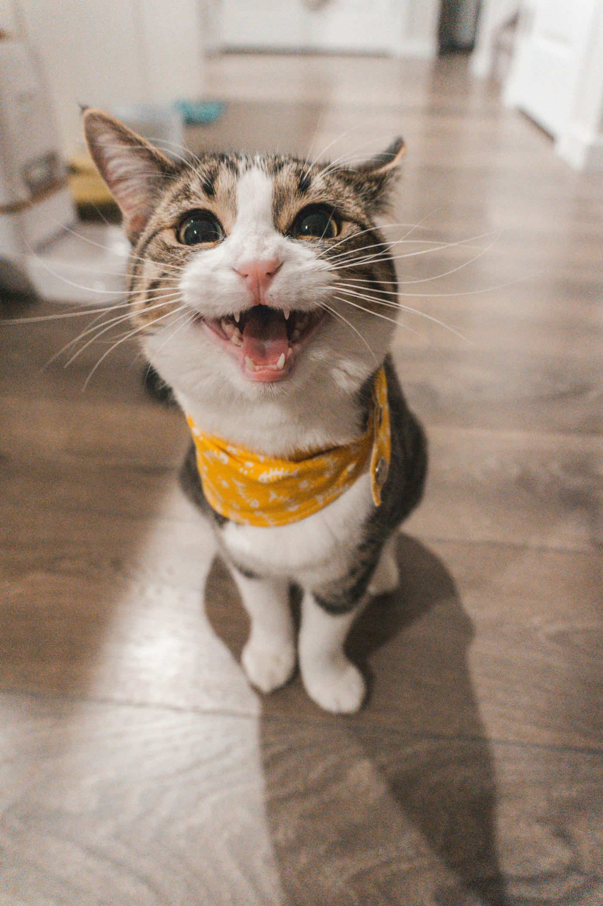
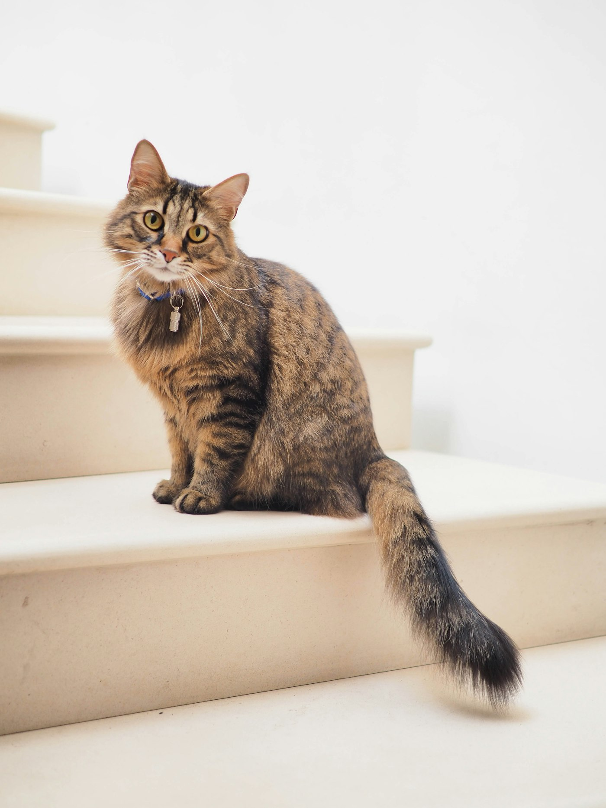
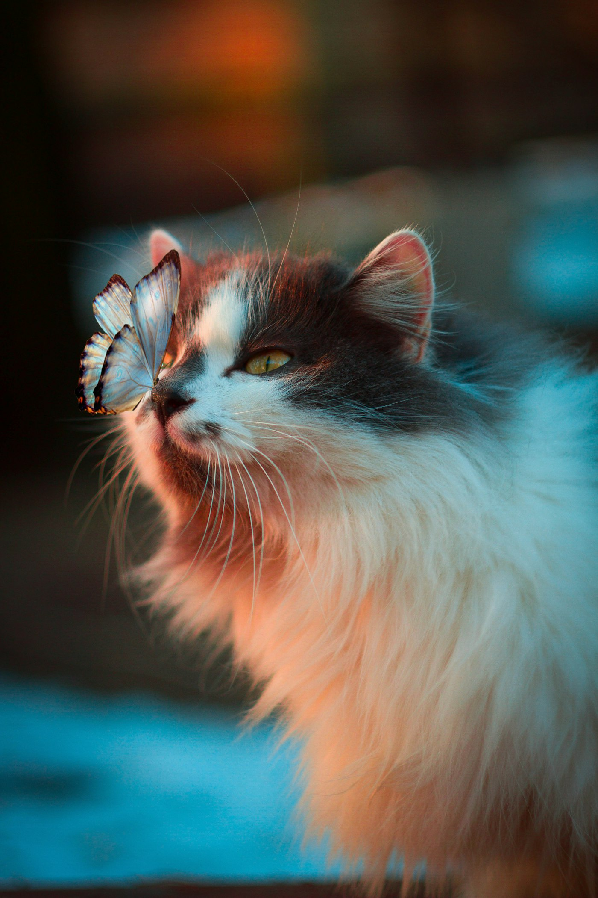
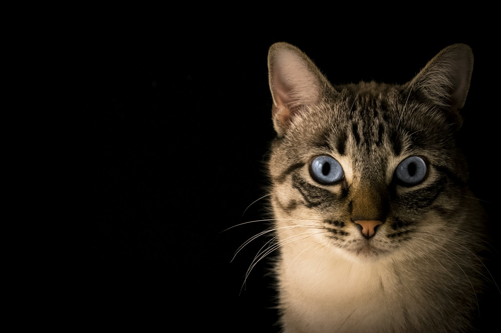
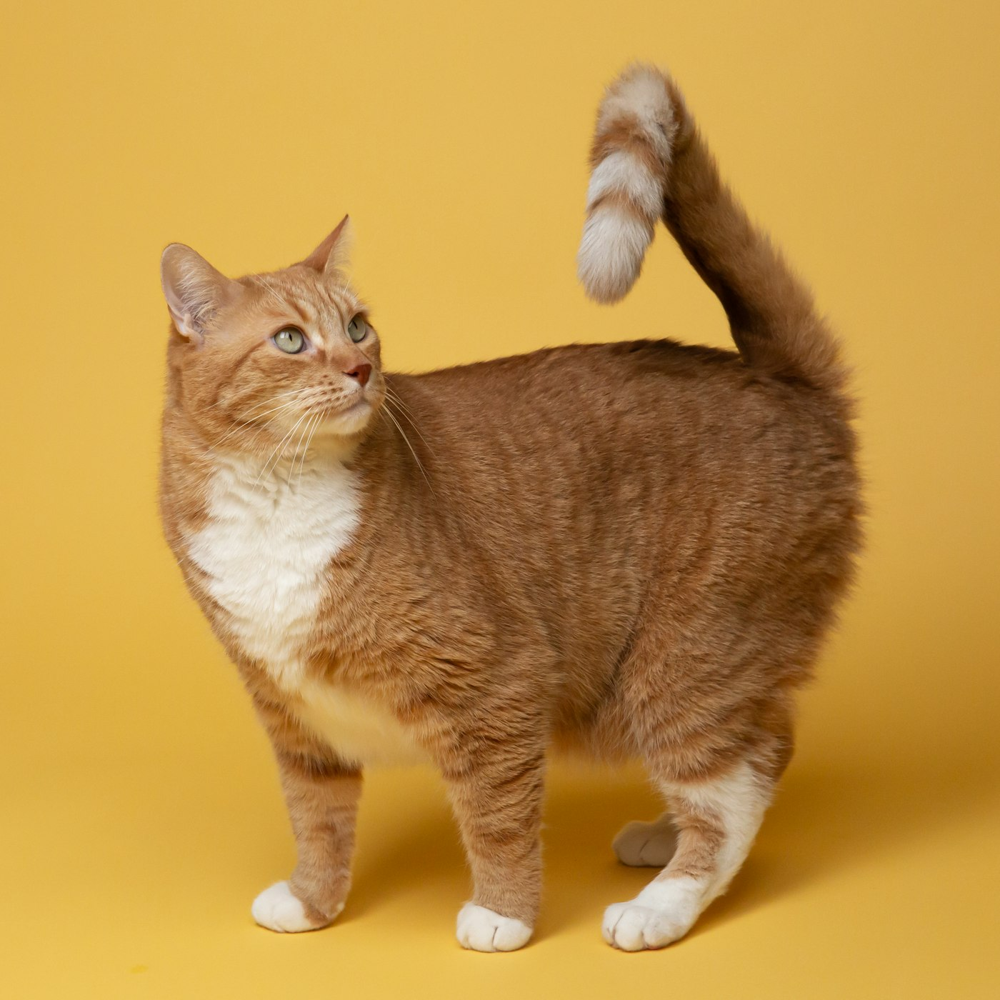

4–12周龄
母源抗体消退、自身免疫尚未建立的“免疫空窗期”，传染病风险最高
8周龄起
猫三联疫苗首针的常规起始年龄，之后每隔 3–4 周加强
2周龄起
幼猫体内驱虫的起始时间，此后按体重与医嘱定期进行
24小时
持续呕吐、腹泻或拒食超过这个时间，就应从“观察”转为“就医”
现状观察
城市家养幼猫，为什么更容易生病？
与成年猫相比，幼猫的问题往往不是“单一疾病”，而是几个因素叠加：免疫系统不成熟、环境频繁变化、饲养知识不足、就诊时机偏晚。
免疫空窗期与“过早离乳”
幼猫 4～12 周龄时，母源抗体逐渐消退，自身免疫又没建立起来。如果在这一阶段过早离乳、频繁更换环境或与来历不明的猫接触，猫瘟、猫鼻支等传染病的风险会明显升高。
看看这阶段最怕什么 →
需要说明的是：本页整理的是临床与养护中较为共识的内容，用于日常识别与决策参考，不能替代执业兽医的当面诊断。不同地区、不同猫舍的病原流行情况差异较大，具体免疫程序请以就诊医院的建议为准。
高发疾病速览
幼猫门诊里最常见的几类问题
病毒性传染病、寄生虫、皮肤真菌与营养代谢问题，占了幼猫就诊的大多数。点击卡片可查看每种病的识别要点与处理原则。




